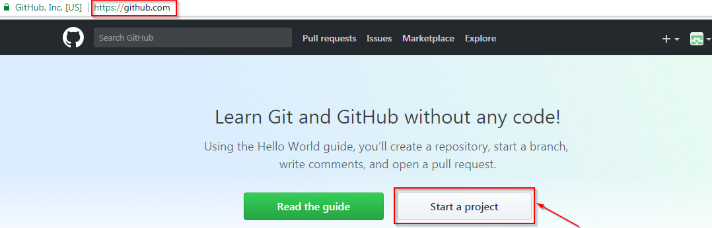
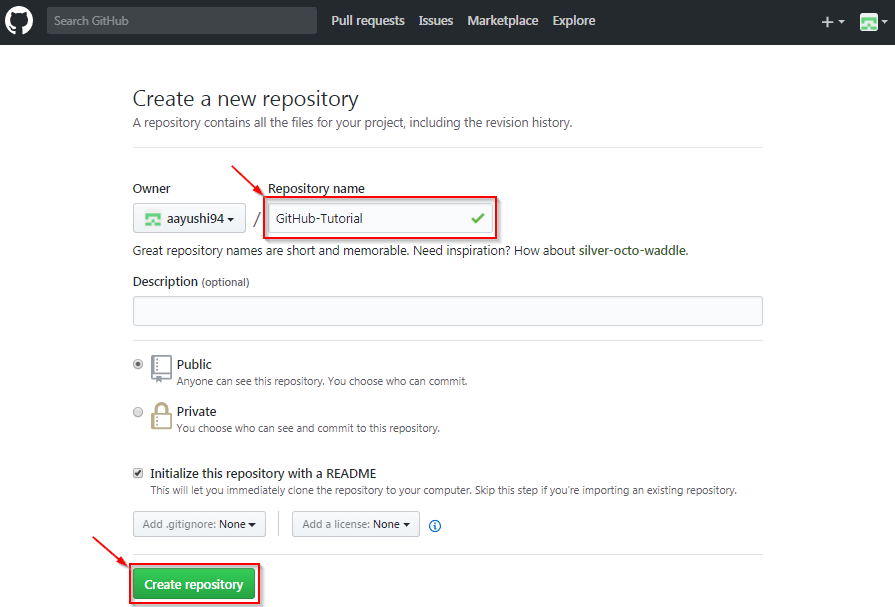
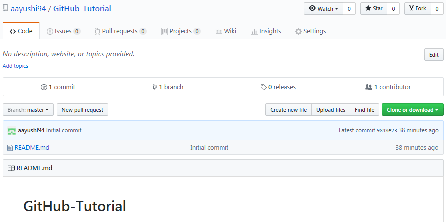
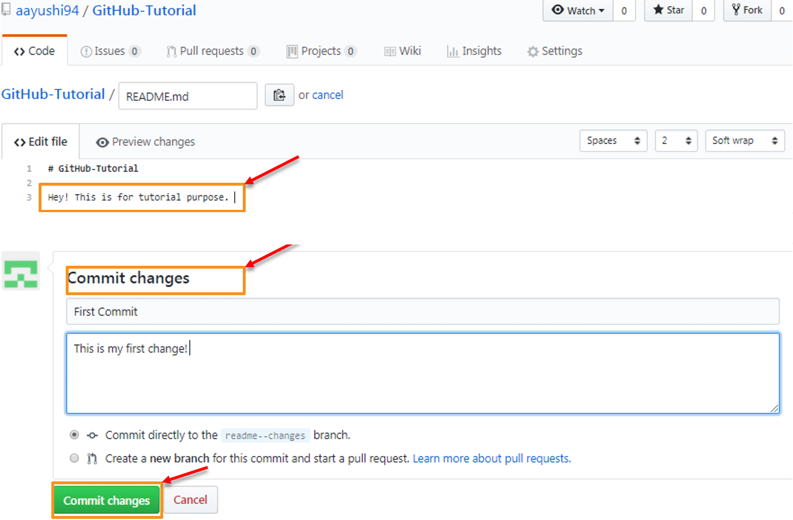
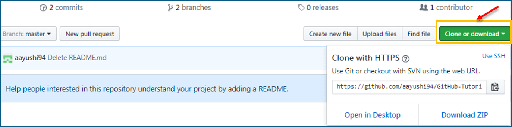
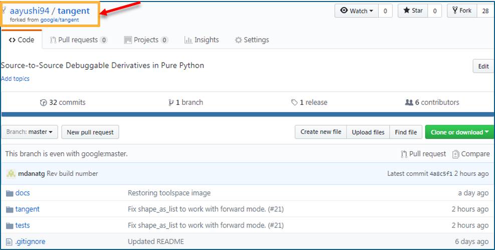
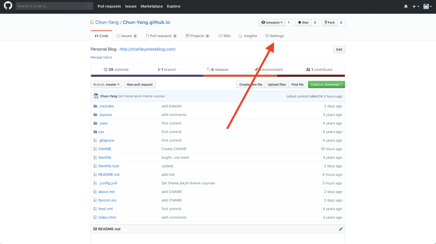
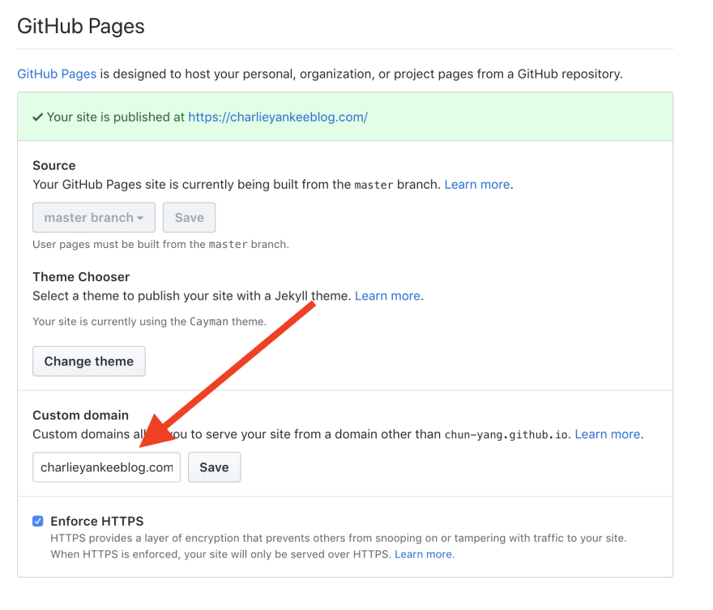

Github Pages
How to use gitHub – Developers collaboration using gitHub

If you are someone who doesn’t know how to use GitHub, then this blog is for you. Github is a web-based platform used for version control. Git simplifies the process of working with other people and makes it easy to collaborate on projects. Team members can work on files and easily merge their changes in with the master branch of the project.
In this “how to use Github” blog, you will learn:
Step 1: Introduction to GitHub

To be very crisp about it, GitHub is a file or code sharing service to collaborate with different people.
GitHub is a highly used software which is typically used for version control. It is helpful when more than just one person is working on a project. Say for example, a software developer team wants to build a website and everyone has to update their codes simultaneously while working on the project. In this case, Github helps them to build a centralized repository where everyone can upload, edit and manage the code files.
GitHub is a central repository and Git is a tool which allows you to create a local repository. Git is a version control tool that will allow you to perform all kinds of operations to fetch data from the central server or push data to it whereas GitHub is a core hosting platform for version control collaboration.
Now let me list down the ways in which GitHub makes git simple:
-
- GitHub provides you a beautiful visual interface which helps you to track or manage your version controlled projects locally.
- Once you register on GitHub, you can connect with social network and build a strong profile.
So let’s get started with GitHub.
Step 2: Creating a GitHub Repository
A repository is a storage space where your project lives. It can be local to a folder on your computer, or it can be a storage space on GitHub or another online host. You can keep code files, text files, images or any kind of a file in a repository. So let me make your task easy, just follow these simple steps to create a GitHub repository:
- Go to the link: https://github.com/ . Fill the sign up form and click on “Sign up for Github”.
- Click on “Start a new project”.
Refer to the below screenshot to get a better understanding.
Enter any repository name and click on “Create Repository”. You can also give a description to your repository (optional).
Congratulations, your repository is successfully created! It will look like the below screenshot:
So now my central repository has been sucessfully created! Once this is done, you are ready to commit, pull, push and perform all the other operations. Now let’s move forward and understand branching in GitHub.
Step 3: Create Branches and Perform Operations
Branching:
Branches help you to work on different versions of a repository at one time. Let’s say you want to add a new feature (which is in the development phase), and you are afraid at the same time whether to make changes to your main project or not. This is where git branching comes to rescue. Branches allow you to move back and forth between the different states/versions of a project.
To create a branch in GitHub, follow the below steps:
- Click on the dropdown “Branch: master”
- As soon as you click on the branch, you can find an existing branch or you can create a new one. In my case, I am creating a new branch with a name “readme- changes”. Refer to the below screenshot for better understanding.
Once you have created a new branch, you have two branches in your repository now i.e. read-me (master branch) and readme- changes. The new branch is just the copy of master branch. So let’s perform some changes in our new branch and make it look different from the master branch.
How to use GitHub: Operations
Commit Command:
This operation helps you to save the changes in your file. When you commit a file, you should always provide the message, just to keep in the mind the changes done by you.
Now let’s make our first commit, follow the below steps:
- Click on “readme- changes” file which we have just created.
- Click on the “edit” or a pencil icon in the righmost corner of the file.
- Once you click on that, an editor will open where you can type in the changes or anything.
- Write a commit message which identifies your changes.
- Click commit changes in the end.
Refer to the below screenshot for better understanding:
We have successfully made our first commit. Now this “readme- changes” file is different from the master branch. Next, let us see how can we open a pull request.
Pull Command
Pull command is the most important command in GitHub. It tell the changes done in the file and request other contributors to view it as well as merge it with the master branch. Once the commit is done, anyone can pull the file and can start a discussion over it. Now let us see different steps involved to pull request in GitHub.
- Click the ‘Pull requests’ tab.
- Click ‘New pull request’.
- Once you click on pull request, select the branch and click ‘readme- changes’ file to view changes between the two files present in our repository.
- Click “Create pull request”.
- Enter any title, description to your changes and click on “Create pull request”. Refer to the below screenshots.
Next, let us move forward and see how can you merge your pull request.
Merge Command
Here comes the last command which merge the changes into the main master branch. We saw the changes in pink and green color, now let’s merge the “readme- changes” file with the master branch/ read-me. Go through the below steps to merge pull request.
- Click on “Merge pull request” to merge the changes into master branch.
- Click “Confirm merge”.
- You can delete the branch once all the changes have been incorporated and if there are no conflicts. Refer to the below screenshots.
I hope you guys are trying these steps simultaneously while you are learning how to use GitHub. Next, let us move to our last topic in ‘how to use GitHub’ blog, i.e. Cloning and forking a GitHub repository.
Step 4: Cloning and Forking GitHub Repository
Cloning:
Before I actually talk about cloning a GitHub repository, first let us understand why do we need to clone a repository. The answer is simple! Suppose you want to use some code which is present in a public repository, you can directly copy the contents by cloning or downloading. Refer to the below screenshot for a better understanding.
Cloning is really simple! In case you are facing any challenges on how to use GitHub, please comment your problems in the section below. Moving forward, let’s see what forking is.
Forking:
First, let us talk about why do we need forking. Suppose, you need some code which is present in a public repository, under your repository and GitHub account. For this, we need to fork a repository.
Before we get started with forking, there are some important points which you should always keep in mind.
- Changes done to the original repository will be reflected back to the forked repository.
- If you make a change in forked repository, it will not b reflected to the original repository until and unless you have made a pull request.
Now let’s see how can you want to fork a repository. For that, follow the below steps:
- Go to Explore and search for public repositories.
- Click “fork”. Note that this “tangent” repository is already forked 27 times and it is under “google” account. Refer the below image for better understanding.
As soon as you click on “Fork”, it will take some time to fork the repository. Once done you will notice that the repository name is under your account. For reference, you can have a look at the below screenshot.
Congratulations! You have successfully forked an existing repository under your own account.
That’s all for this post, I hope you enjoyed it and got the solution for “how to use GitHub”.
How to setup google domain for github pages
Intro
Github pages is easy to setup, but to attach a custom domain with google domains, you may run into problems. Here is how you can do it in 2 steps.
Prerequisites
♦ You have a github pages repository, e.g. https://github.com/hci2019group02/
♦ You purchased a domain on google domain, e.g. freenom.com
Step 1: Let gitHub pages know your custom domain
♦ Go to your github repository settings page
♦ Add you custom domain name at Settings > GitHub Pages > Custom domain
Step 2: Let your custom domain (freenom.com) points to your github pages
♦ Go to registar page on your google
domains,
select your domain
♦ Go to DNS > Custom resource records
Thanks for reading our document.